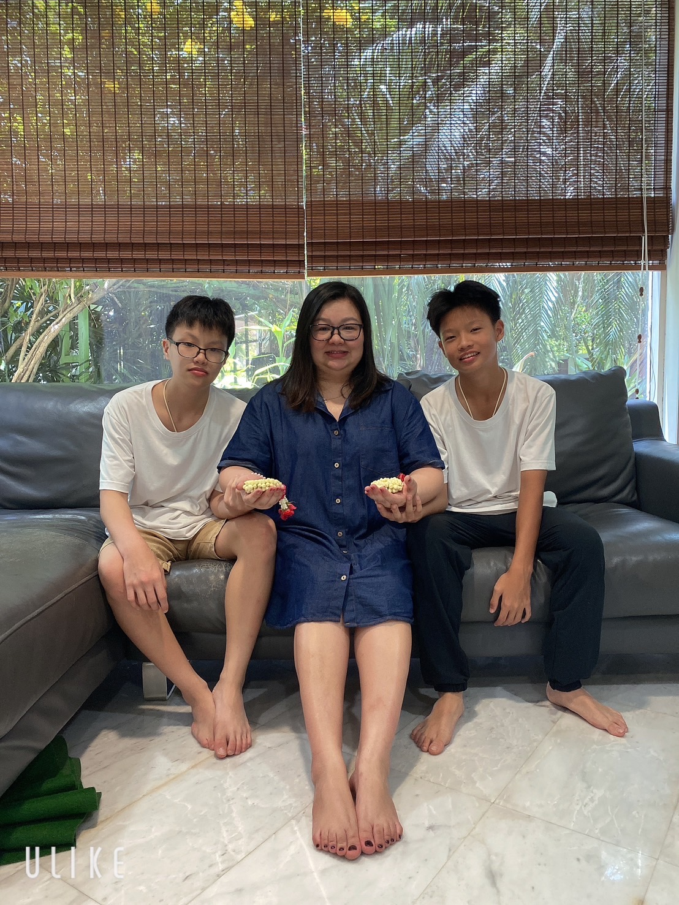
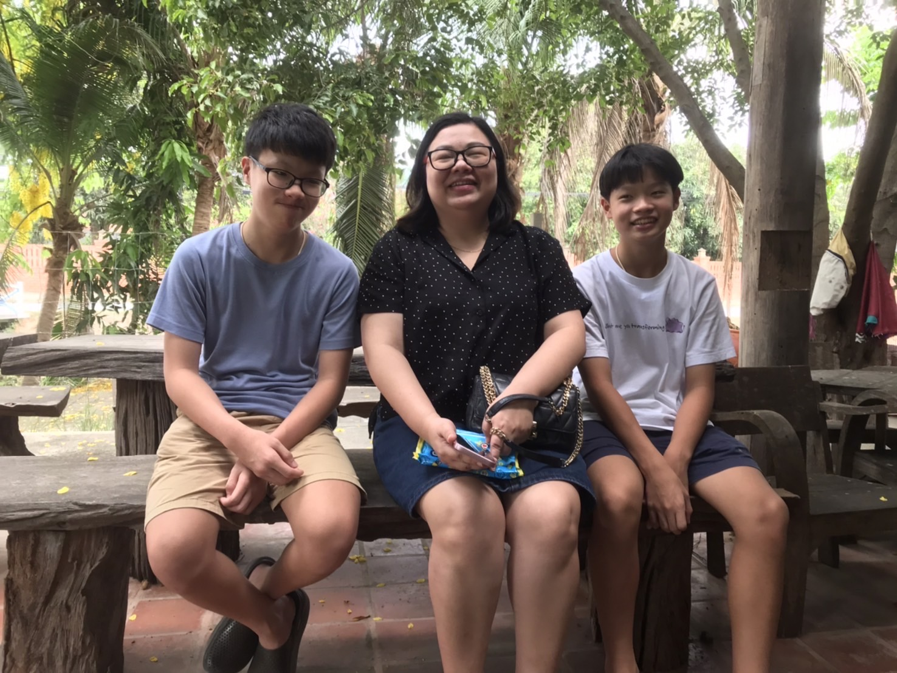

วันพ่อแห่งชาติ🥀🥀🥀
สี่งที่อยากบอกพ่อ
พ่อทํางานเหนื่อยเพื่อเรา ผมรู้สึกขอบคุณที่พ่อให้กําหนิดพวกเรามา ขอบคุณครับ
 บทกลอนมอบให้พ่อ
มีกี่คนให้เราได้ทั้งชีวิต ไม่เคยคิดจะทอดทิ้งหรือทำร้าย ใครคนนั้นท่านก็คือพ่อเราไง พ่อทุกกายลูกสุขใจแม่ยอมทนบทกลอนมอบแก่พ่อ2